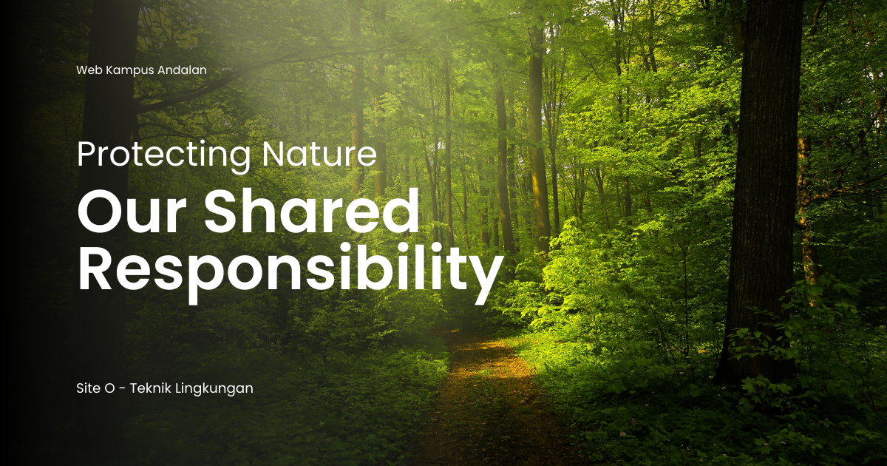

Pengelolaan dan Valorasi Lumpur
Pengelolaan dan Valorasi Lumpur: Mengubah Limbah Menjadi Sumber Daya dalam Teknik Lingkungan
Dalam major studi Teknik Lingkungan, mata kuliah Pengelolaan dan Valorasi Lumpur mempelajari bagaimana lumpur yang dihasilkan dari proses pengolahan air maupun air limbah dapat dikelola secara aman dan dimanfaatkan kembali menjadi sumber daya yang bernilai. Mata kuliah ini menggabungkan prinsip pengelolaan limbah, teknologi pengolahan, pemulihan sumber daya, serta konsep ekonomi sirkular untuk mengurangi dampak lingkungan sekaligus meningkatkan efisiensi pemanfaatan material.
Lumpur atau sludge sering dianggap sebagai limbah akhir yang hanya memerlukan pembuangan. Padahal, lumpur mengandung bahan organik, nutrien, energi, dan material tertentu yang berpotensi dimanfaatkan kembali melalui teknologi yang tepat. Oleh karena itu, pengelolaan dan valorasi lumpur menjadi pendekatan penting dalam sistem pengolahan lingkungan modern.
Apa Itu Pengelolaan dan Valorasi Lumpur?
Pengelolaan dan Valorasi Lumpur adalah bidang kajian yang membahas proses penanganan, pengurangan volume, stabilisasi, pengolahan, hingga pemanfaatan kembali lumpur hasil pengolahan air atau limbah agar lebih aman, bernilai ekonomi, dan ramah lingkungan. Istilah valorasi merujuk pada upaya meningkatkan nilai suatu material limbah melalui pemulihan energi, nutrien, atau produk lain yang bermanfaat.
Dalam Teknik Lingkungan, pendekatan ini bertujuan mengubah paradigma pengelolaan lumpur dari sekadar pembuangan menjadi pemanfaatan sumber daya secara berkelanjutan.
Fokus yang Dipelajari dalam Pengelolaan dan Valorasi Lumpur
Mata kuliah ini membahas berbagai konsep dan teknologi yang digunakan dalam pengelolaan lumpur, antara lain:
- Karakteristik lumpur dari instalasi pengolahan air dan air limbah.
- Teknik pengentalan dan dewatering untuk mengurangi kadar air dan volume lumpur.
- Stabilisasi lumpur melalui proses biologis, kimia, atau termal guna mengurangi risiko pencemaran dan patogen.
- Pengolahan lumpur seperti anaerobic digestion, pengeringan, dan insinerasi.
- Valorasi dan resource recovery untuk memperoleh energi, pupuk, atau material bernilai dari lumpur.
- Aspek kualitas, keamanan, dan regulasi dalam pemanfaatan lumpur hasil pengolahan.
- Analisis ekonomi dan keberlanjutan dalam sistem pengelolaan lumpur modern.
Mahasiswa juga belajar bagaimana mengevaluasi pilihan teknologi berdasarkan karakteristik lumpur, kebutuhan operasional, serta dampak lingkungan dan sosialnya.
Peran Pengelolaan dan Valorasi Lumpur dalam Studi Teknik Lingkungan
Dalam bidang Teknik Lingkungan, Pengelolaan dan Valorasi Lumpur memiliki peran penting karena menjadi bagian integral dari sistem pengolahan air dan limbah. Mata kuliah ini membantu mahasiswa memahami bahwa pengelolaan residu merupakan aspek penting dalam mencapai sistem lingkungan yang efisien dan berkelanjutan.
Mata kuliah ini memperkuat kemampuan mahasiswa dalam pengolahan limbah, pemulihan sumber daya, dan penerapan prinsip ekonomi sirkular sehingga mereka dapat merancang sistem pengolahan yang tidak hanya aman tetapi juga produktif.
Manfaat dalam Masyarakat, Riset, dan Dunia Kerja
Pengelolaan dan Valorasi Lumpur memiliki manfaat luas dalam berbagai bidang:
- Dalam masyarakat: membantu mengurangi pencemaran serta mendukung pemanfaatan limbah menjadi produk yang lebih berguna.
- Dalam riset: membuka peluang pengembangan teknologi pemulihan energi, nutrien, dan material dari lumpur.
- Dalam dunia kerja: dibutuhkan pada instalasi pengolahan air limbah, industri, konsultan lingkungan, perusahaan energi, dan lembaga pengelolaan limbah.
Keahlian dalam pengelolaan lumpur juga membantu menekan biaya pembuangan, meningkatkan efisiensi operasional, serta mendukung penerapan sistem lingkungan yang lebih berkelanjutan.
Tren Terkini dalam Pengelolaan dan Valorasi Lumpur
Perkembangan bidang ini semakin pesat seiring meningkatnya kebutuhan pemanfaatan limbah dan efisiensi sumber daya, di antaranya:
- Circular Economy dan Waste-to-Resource yang menempatkan lumpur sebagai sumber daya potensial.
- Biogas dan Energy Recovery melalui proses digestasi anaerob untuk menghasilkan energi terbarukan.
- Nutrient Recovery seperti pemulihan fosfor dan nitrogen untuk kebutuhan pertanian.
- Thermal Treatment dan Biochar Production dalam pengolahan lumpur menjadi material bernilai tambah.
- Smart Sludge Management menggunakan sensor dan sistem digital untuk monitoring serta optimasi pengolahan.
Integrasi teknologi pengolahan modern dan prinsip keberlanjutan menjadikan valorasi lumpur semakin penting dalam sistem pengelolaan limbah dan sumber daya masa depan.
Penutup
Pengelolaan dan Valorasi Lumpur merupakan mata kuliah penting dalam studi Teknik Lingkungan yang mengajarkan bagaimana residu pengolahan air dan limbah dapat dikelola serta dimanfaatkan secara aman dan bernilai. Mata kuliah ini memperluas cara pandang mahasiswa dari pengelolaan limbah konvensional menuju pemulihan sumber daya yang lebih berkelanjutan.
Di era ekonomi sirkular dan pengelolaan sumber daya yang efisien, kemampuan dalam pengelolaan dan valorasi lumpur menjadi kompetensi penting bagi mahasiswa Teknik Lingkungan untuk menciptakan solusi inovatif yang mendukung lingkungan dan masyarakat.
Mahasiswa Sabi
©Repository Muhammad Surya Putra Fadillah